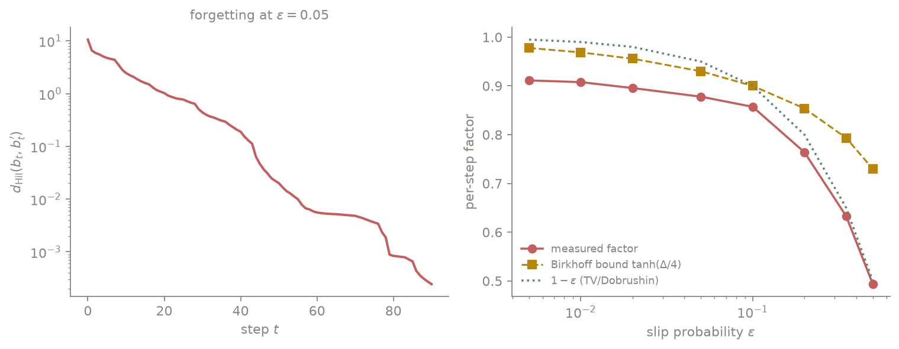
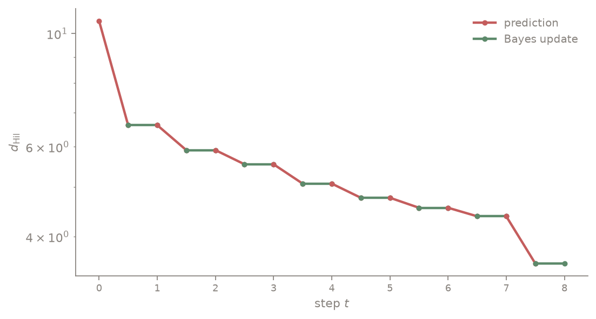
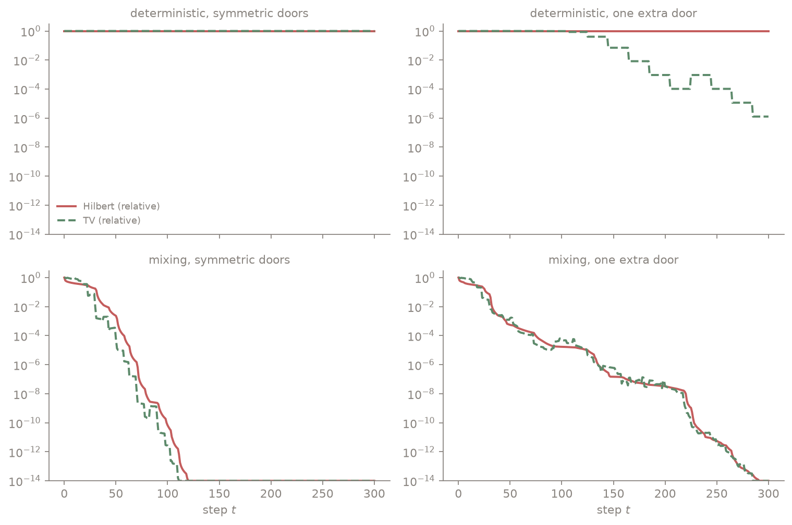
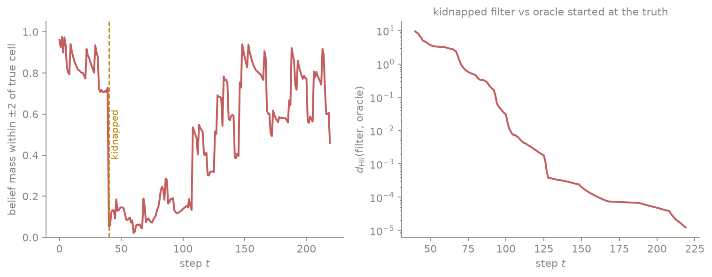

Contraction in belief space, or why robots are allowed to forget
A Fact Every Roboticist Knows and Few Can Cite
Initialize Monte Carlo Localization with a completely wrong prior, drive the robot around, and it recovers. Everyone who has run a particle filter on a real robot has seen this, most treat it as a pleasant empirical habit of well-tuned systems, and it is neither: it is a contraction mapping theorem. Better, the theorem's mechanism is genuinely counterintuitive. The thing that erases a wrong prior is not your sensor. It is your motion noise, and there is a precise sense in which the sensor never helps at all.
This post lays out that theory, all of it long known and attributed below, and then does something I have not seen done: measures the mechanism directly, on the smallest robot that exhibits it. None of the mathematics is new. The experiments, and one sharp counterintuitive split they expose, are built for this post.
The Belief Is the State
A robot that cannot observe its state keeps a belief $b$, a probability distribution over states, and Åström observed in 1965 that the belief is itself a fully observed state: a POMDP is an MDP over the simplex. Two different operators then act on belief space, and both turn out to be contractions.
The first is routine: the Bellman operator of the belief-MDP contracts value functions over beliefs in the sup norm with factor $\gamma$, exactly as in any discounted MDP. That gives value iteration over beliefs and is the basis of classical POMDP solvers. This post is about the second operator, which is stranger: the Bayes filter itself, contracting beliefs.
The Filter Is the Interesting Contraction
The filter alternates two maps. Prediction pushes the belief through the motion kernel, $b^- = P^{\top} b$, and the update reweights by the observation likelihood, $b'(x) \propto g(y \mid x) \, b^-(x)$. The right distance for analyzing this pair is not Euclidean and not total variation but the Hilbert projective metric,
$$ d_{\mathrm{Hil}}(b, b') = \log \frac{\max_x \, b(x) / b'(x)}{\min_x \, b(x) / b'(x)} $$
a distance between rays that ignores normalization and measures worst-case ratio disagreement. Two classical facts make it the right choice, both at the heart of the filter stability literature (Atar and Zeitouni 1997, Le Gland and Oudjane 2004):
- Prediction is a strict contraction whenever the kernel is mixing. Birkhoff's theorem gives the factor $\tanh(\Delta(P)/4) \lt 1$, where $\Delta(P)$ is the kernel's projective diameter.
- The Bayes update is an isometry. Two beliefs multiplied by the same positive likelihood have every ratio $b(x)/b'(x)$ unchanged, so $d_{\mathrm{Hil}}$ does not move, exactly, and normalization is invisible to a projective metric.
Chain them and you get exponential forgetting: run two filters from different priors $b_0$ and $b_0'$, feed them the same observation stream, and
$$ d_{\mathrm{Hil}}(b_t, b_t') \le \tanh\big(\Delta(P)/4\big)^{t} \, d_{\mathrm{Hil}}(b_0, b_0') $$
no matter what the observations are. That "no matter what" deserves a double take. The observations appear nowhere in the bound because the update step contributes exactly nothing to the merging: every bit of prior-forgetting is purchased by the mixing in the motion model. The experiments below make this visible.
What This Buys a Planner
Filter contraction is not a curiosity; it is the license for most of what practical partially observed planning does.
- Bounded memory is enough. Kara and Yüksel showed that under exponential filter stability, policies that condition on a finite window of recent observations are near-optimal, with error decaying exponentially in the window length, and that finite-memory Q-learning converges. The contraction rate literally prices the memory a controller needs.
- Particle filters don't drift. Uniform-in-time error bounds for particle approximations (Del Moral and Guionnet, and the Hilbert-metric route in Le Gland and Oudjane) exist because the ideal filter contracts: approximation errors injected at each step are forgotten at the same rate as wrong priors, instead of accumulating.
- Robotics practice already banks on it. Kidnapped-robot recovery in MCL, and the standard habit of inflating a motion model's noise beyond its physically measured value, are both this theorem being used without being cited.
A Corridor to Measure It In
The smallest robot that exhibits all of it: a cyclic corridor of $N = 40$ cells, doors at cells 3, 10, 23, and 30, a pattern chosen to be invariant under rotation by half the corridor (that symmetry becomes an experiment later; an asymmetric variant adds one door at cell 5). Each step the robot advances one cell, except with slip probability $\varepsilon$ it ends up anywhere; the door sensor lies with probability $0.1$. The slip term is what makes the kernel mixing, and for this kernel the projective diameter has a closed form, $\Delta = 2 \log(1 + N(1 - \varepsilon)/\varepsilon)$, so Birkhoff's bound is computable exactly rather than gestured at. The whole filter is a dozen lines:
def predict(b, eps): # drift one cell, or slip anywhere
return (1 - eps) * np.roll(b, 1) + eps * b.mean()
def update(b, y, doors, delta=0.1): # door sensor with error rate delta
door = np.array([1.0 if x in doors else 0.0 for x in range(len(b))])
agree = door if y == 1 else 1 - door
b = b * (agree * (1 - delta) + (1 - agree) * delta)
return b / b.sum()
def hilbert(b, c):
r = b / c
return np.log(r.max()) - np.log(r.min())Every experiment below runs two copies of this filter from different priors on a shared observation stream and watches distances.
Forgetting is a straight line
Start one filter nearly certain the robot is at cell 3 and the other with a uniform prior, about as disagreeable a pair as the simplex offers. The Hilbert distance between them on a log axis is a straight line: geometric forgetting, as promised.

Sweeping the slip probability and averaging the measured per-step factor over 12 seeds:
eps measured Birkhoff bound 1 - eps
0.005 0.9113 0.9778 0.995
0.020 0.8956 0.9558 0.980
0.050 0.8779 0.9300 0.950
0.100 0.8571 0.9000 0.900
0.200 0.7640 0.8539 0.800
0.500 0.4935 0.7298 0.500The bound holds at every noise level, and it is honest but loose: it is a worst case over all belief pairs, while the sensor keeps the actual pair sharp, which turns out to contract faster. Notice the practical reading of the first column: even one part in two hundred of motion slip already buys roughly nine percent forgetting per step.
The staircase: observations never merge beliefs
Now record the Hilbert distance three times per step: before prediction, after prediction, after the update. The claim from the theory is that the second interval does nothing. Not approximately nothing: nothing.

Across the entire run, the largest change in $d_{\mathrm{Hil}}$ across any Bayes update was $8.9 \times 10^{-16}$: floating-point roundoff. The isometry is implicit in the stability proofs, where the update is dispatched in a line as projectively harmless, but I have not seen it exhibited as a measurement, and it earns a moment of discomfort. The sensor, the part of the robot you paid for, contributes exactly zero to reconciling two hypotheses' ratio structure. What the sensor does do is concentrate both beliefs near the truth, which is a statement about accuracy, not about prior-robustness. Those are different quantities, and the next experiment splits them apart completely.
A two-by-two of failure and rescue
Take two priors related by the corridor's symmetry, point masses at cells 0 and 20, and cross two switches: motion deterministic versus mixing ($\varepsilon = 0.05$), and doors symmetric versus one extra asymmetric door. Track both the Hilbert distance and total variation, each relative to its initial value.

Three of the panels behave, and one of them is the point of this post.
- Deterministic motion, symmetric doors: both metrics sit at exactly $1.00$ forever. Deterministic motion is a permutation of cells, hence a Hilbert isometry, and the symmetric door pattern makes every observation equally likely under both hypotheses. The two beliefs are carried around the corridor as a rigid pair. A robot in a perfectly symmetric world provably cannot relocalize, whatever its sensor quality.
- Deterministic motion, one extra door: total variation falls by six orders of magnitude, in visible steps, one per lap as the robot passes the asymmetric door and the likelihood punishes the wrong hypothesis. Meanwhile the Hilbert distance stays at exactly $1.00$ of its initial value for all 300 steps. The two metrics flatly disagree about whether the robot has forgotten its prior, and both are right: the observations have moved essentially all the mass to the correct hypothesis (what TV measures) while leaving the beliefs' ratio structure untouched (what Hilbert measures), as the isometry demands.
- Mixing motion, either door pattern: both metrics crash geometrically to numerical zero.
So there are two distinct forgetting mechanisms, and they live in different metrics. Noise-driven forgetting is unconditional: it works whatever the observations say, it is what the Hilbert contraction captures, and it is the strong guarantee. Observation-driven disambiguation is conditional on the world being asymmetric enough to tell hypotheses apart; it shows up in total variation, and its theory, stability through observability rather than mixing, is genuinely harder and belongs to van Handel's line of work rather than to Birkhoff's. The corridor makes the split exact: turn off the noise and only the second mechanism survives; make the world symmetric and neither does.
The kidnapped robot
Finally the classic stress test. The true robot moves deterministically while the filter deliberately models slip at $\varepsilon = 0.05$, which is precisely the noise-inflation habit mentioned earlier, and at step 40 the robot is teleported 17 cells. Two views of the aftermath:

The right panel is the theorem again: after the kidnap, the filter's belief is just a wrong prior, so pair it with an oracle filter initialized at the true position and fed the same observations, and the two merge geometrically, at measured factor $0.927$ per step, consistent with the $0.878 \pm 0.027$ forgetting rate measured in the first experiment. The left panel is the part practitioners actually watch, belief mass near the truth, and it recovers far more slowly, crossing $0.8$ only 108 steps after the kidnap, in bursts timed to door passages. The gap between the panels is the same split as before: forgetting the wrong prior is fast and noise-driven; re-earning confidence is evidence accumulation, paced by how often the world shows the robot something identifying.
Design Rules Hiding in the Rate
Read as engineering, the experiments compress into rules of thumb.
- Noise inflation is not a hack; it purchases robustness at a computable rate. Adding slip probability $\varepsilon$ to the motion model, beyond what the wheels physically do, buys unconditional prior-forgetting at a rate you can measure, and the kidnapped-robot run only recovers because of it.
- A better sensor buys accuracy, not prior-robustness. The staircase is exact: updates are Hilbert isometries. If initialization error or model surprise is the concern, the motion model is the knob, not the sensor budget.
- Symmetry, not sensor noise, is the enemy of relocalization. The top-left panel is a proof by demonstration: in a symmetric world both mechanisms die at once, and no filter tuning revives them. One asymmetric landmark restores disambiguation; a little noise restores unconditional forgetting; the two fixes are independent.
- The measured rate prices memory. A per-step factor of $0.88$ means influence from 50 steps ago is attenuated by $0.88^{50} \approx 0.002$: the quantitative license, in the Kara and Yüksel sense, for a controller that keeps a short window rather than a lifetime of history.
Where This Lives in the Literature
Everything theoretical above is known; the map of who established what:
- Åström (1965). The belief-MDP reduction: the belief is a sufficient statistic and a fully observed state. Smallwood and Sondik (1973) made value iteration over beliefs concrete for POMDPs.
- Atar and Zeitouni (1997), "Exponential stability for nonlinear filtering". Filter forgetting via the Birkhoff contraction, the approach this post's theory sections follow.
- Le Gland and Oudjane (2004), "Stability and uniform approximation of nonlinear filters using the Hilbert metric", Annals of Applied Probability. The canonical treatment: pathwise contraction, the update handled as projectively harmless, and uniform particle filter bounds from the same machinery.
- van Handel (2009), "Observability and nonlinear filtering". The other mechanism: stability from observations distinguishing states, covering non-mixing regimes where Birkhoff's route gives nothing, exactly the top-right panel's phenomenon.
- Del Moral and Guionnet (2001). Uniform-in-time particle filter error bounds from filter stability.
- Kara and Yüksel, "Near optimality of finite memory feedback policies in POMDPs", JMLR 2022, and finite-memory Q-learning under filter stability. The planning payoff: contraction prices the memory a near-optimal controller needs.
- *Thrun, Burgard, and Fox, Probabilistic Robotics (2005).* The corridor-and-doors world this post's robot is a miniature of, and the practice (MCL, noise inflation, kidnapped-robot tests) the theory explains.
The experiments, the staircase exhibit, and the framing of the two-metrics split are built for this post; the isometry itself is implicit in the 1997 and 2004 proofs, and the indifference of Birkhoff contraction to observations is folklore in that community. I have not found either demonstrated as a measurement.
A partially observed robot forgets its wrong beliefs for two separate reasons living in two separate metrics. Motion noise contracts the Hilbert projective metric unconditionally, at a Birkhoff-bounded geometric rate, and observations contribute exactly nothing to it: the Bayes update is an isometry, flat to machine epsilon. Observations instead move probability mass onto the right hypothesis, which is total variation merging, conditional on the world being asymmetric enough to identify. Sensors buy accuracy; noise buys forgiveness; symmetry defeats both; and the measured contraction rate is the price list for how much memory a planner actually needs.